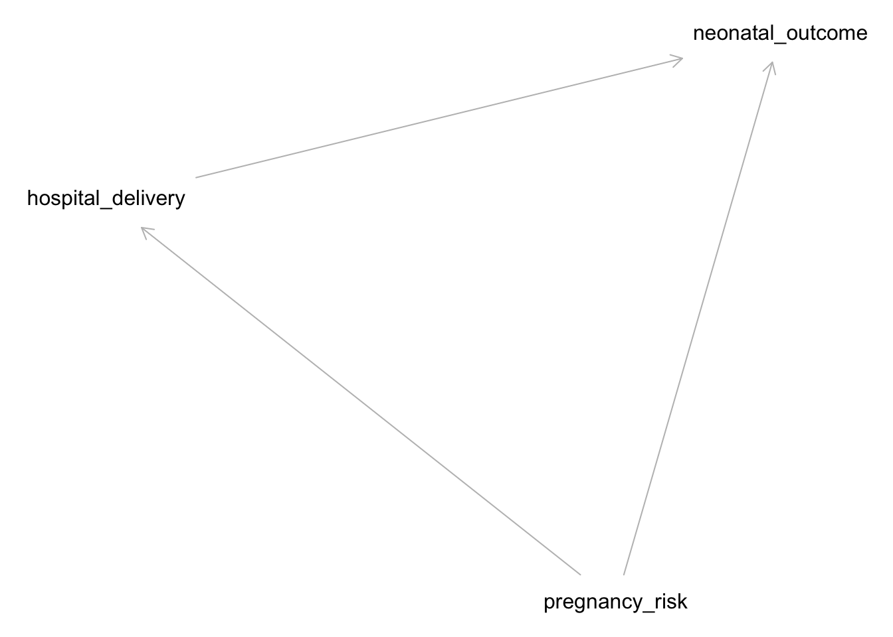
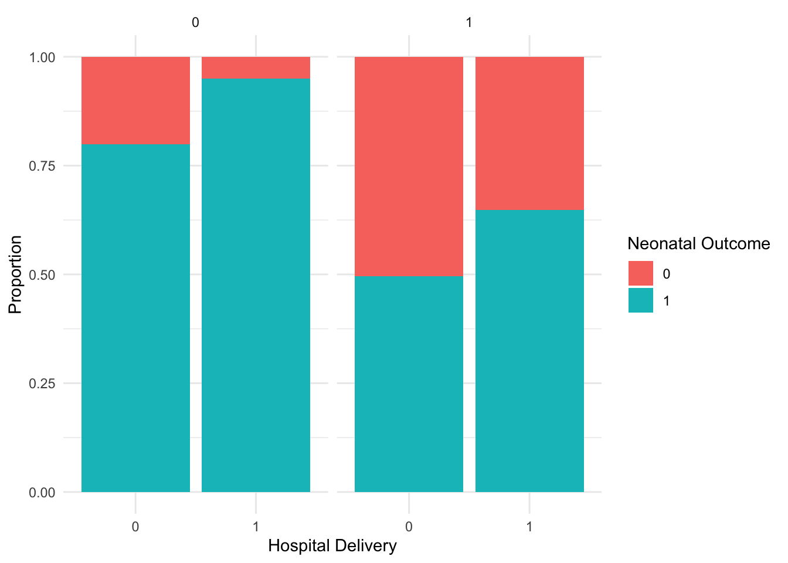

# Install necessary packages if not already installedrequired_pkgs <-c("dagitty", "ggplot2", "broom", "purrr", "dplyr", "data.table", "marginaleffects")cran_repo <-"https://mirror.lyrahosting.com/CRAN/"# <- a CRAN mirror in the Netherlands, can select another one from here https://cran.r-project.org/mirrors.htmlfor (pkg in required_pkgs) {if (!requireNamespace(pkg, quietly =TRUE)) {install.packages(pkg, repos=cran_repo) }}suppressPackageStartupMessages({# Load packageslibrary(purrr)library(broom)library(dagitty)library(ggplot2)library(dplyr)library(marginaleffects)library(data.table)})source(here::here("practicals", "21_dags", "_makedatas.R"))datas <-make_datas()birthw <- datas[['birthw']]
1 Exercise: making a DAG and specifying the correct adjustment set
In this example we’ll practice creating a DAG, and we’ll see how using the wrong DAG leads to the wrong analysis and wrong answers.
Our question is “what is the effect of maternal smoking during pregnancy on neonatal death within 3 months” (expressed as a difference in percentage risk for smoking / no smoking)
1.1 Birthweight data:
We’ll use the (simulated) dataset birthw with data on birthweight and survival of babies.
The birthw dataset contains the following variables:
ageover35: Indicator mother’s age over 35 years (0 = age <= 35, 1 = age >35)
smoking: Smoking status during pregnancy (0 = no, 1 = yes)
1.2.1 Think of a DAG that may fit this data using the observed variables
Take a few minutes to create a DAG (collaboratively) (using e.g. dagitty.net)
1.2.2 Are there variables that may be missing in the data but are relevant?
If so, add them to the DAG, and indicate that they are unobserved
1.2.3 With your DAG, can the causal effect be estimated?
Use e.g. dagitty.net to create your DAG and see if there are ways to estimate the causal effect.
1.3 Analyse the data
Let’s try some analyses on the data. We’ll fit different logistic regression models with different covariates (independent variables). Specifically, fit a model with:
all observed covariates (fit_allobs)
only the smoking variable (fit_marginal)
These models give us estimates of (log) odds ratios for the independent variables. To translate a logistic regression model into differences in probabilities we use the avg_comparisons function from the marginaleffects package.
The effect estimates of fit_allobs and fit_marginal are quite different, they have different signs. How could this be explained? Which effect estimate do you think is more credible?
1.4 Assume a DAG
Assume the following DAG
Figure 1: DAG for smoking and death
In this DAG, there is another variable gene that influences both lbwt and death.
How does this DAG change the analysis? (tip: enter it in dagitty.net)
answer: the smoking-death relationship has no confounders, the marginal estimate is correct. Adjusting for lbwt ‘washes-out’ part of smoking’s effect because lbwt is a mediator. Also, lbwt is a collider between gene and smoking, and gene has a direct arrow into death. Conditioning on lbwt opens a bidirected path between smoking and gene, creating a new backdoor path. So there are two reasons not to condition on lbwt: it is a mediator and a collider with an unmeasured variable
See this other DAG on the smoking question
Figure 2: birthweight DAG 2
Given the DAG in Figure 2, see the following regression model
Assuming no parametric form bias, will this lead to an unbiased causal effect estimate?
answer: yes this is a correct analysis. lbwt is still a collider, but it does not open any new back-door paths because gene no longer has a direct effect on death and all variables other than smoking that do have such an arrow are in the conditioning set (ageover35,ht) so these paths are blocked
2 DAG assumptions: conditional independencies and strength of assumptions
DAGs imply (conditional) indepencies. These can be checked with data.
We generated datasets according to each DAG named df1, df2 and df3, but forgot what dataset corresponded to what DAG.
Assume linear models with Gaussian error terms for all variables, how would you test the conditional independencies to figure out what DAG corresponds to what dataset?
Figure 4 (b) is stronger than Figure 4 (c) as in the latter, it could be that the effects through \(W\) are all absent (remember that the presence of an arrow from A to B implies a possible effect of A on B)
Figure 4 (c) is stronger than Figure 4 (a) as in the first, Z can only affect Y through T and W, whereas in Figure 4 (a) Z can effect Y through T and can effect Y through other paths (e.g. W)
This is often said of RCTs but has no direct bearing on why they are special for causal inference
Remember that the target distribution has no arrows going in to the treatment variable, this is what we get in a RCT
RCTs are often critiqued as having poor external validity, because they may recruit non-random subpopulations from the target population
This is a subtle point, but RCTs have no confounders as there are no common causes of the treatment and the outcome. Variables that are confounders in observational studies are prognostic factors in RCTs, as they (by definition of being a confounder in an observational study) influence the outcome, but not the treatment in the RCT. Randomization balances the distribution of prognostic factors between treatment arms in expectation. In a particular RCT, observed (and unobserved) prognostic factors will always have some random variation between treatment arms. This does not reduce the validity of the RCT in terms of bias. This variation is reflected in the standard error of the estimate. In some cases, adjusting for known prognostic factors in RCTs may reduce the variance of the treatment estimate (i.e. narrowing the confidence interval), but this is an entire discussion on its own.
3 Confounder adjustment with Daggity
In this exercise we will use the dagitty package for creating and manipulating DAGs.
3.1 Creating and Visualizing a DAG
Let’s create a DAG for the pregnancy example:
Code
# Define the DAGdag <-dagitty("dag { pregnancy_risk -> hospital_delivery pregnancy_risk -> neonatal_outcome hospital_delivery -> neonatal_outcome}")# Plot the DAGplot(dag)
Plot coordinates for graph not supplied! Generating coordinates, see ?coordinates for how to set your own.

This DAG assumes that pregnancy risk influences both the likelihood of hospital delivery and neonatal outcomes, and that hospital delivery affects neonatal outcomes.
3.1.1 Simulating Data
We will simulate data based on the DAG structure:
Code
set.seed(123)n <-10000# Simulate variablespregnancy_risk <-rbinom(n, 1, 0.3) # 30% high riskhospital_delivery <-rbinom(n, 1, 0.5+0.3* pregnancy_risk) # 50% baseline + 30% if high riskneonatal_outcome <-rbinom(n, 1, 0.8-0.3* pregnancy_risk +0.15* hospital_delivery) # outcome affected by both# Create a data framedf <-data.table(pregnancy_risk, hospital_delivery, neonatal_outcome)
3.1.2 Analyzing the Data
Check the relationships in the data:
Code
# Summary statisticssummary(df)
pregnancy_risk hospital_delivery neonatal_outcome
Min. :0.0000 Min. :0.0000 Min. :0.0000
1st Qu.:0.0000 1st Qu.:0.0000 1st Qu.:1.0000
Median :0.0000 Median :1.0000 Median :1.0000
Mean :0.2952 Mean :0.5859 Mean :0.7982
3rd Qu.:1.0000 3rd Qu.:1.0000 3rd Qu.:1.0000
Max. :1.0000 Max. :1.0000 Max. :1.0000
Code
# Plot the dataggplot(df, aes(x =factor(hospital_delivery), fill =factor(neonatal_outcome))) +geom_bar(position ="fill") +facet_grid(~ pregnancy_risk) +labs(x ="Hospital Delivery", y ="Proportion", fill ="Neonatal Outcome") +theme_minimal()

3.1.3 Causal Inference Using DAGs
Let’s use the DAG to determine what to condition on to estimate the causal effect of hospital delivery on neonatal outcomes:
Code
# Identify adjustment set using DAGittyadjustmentSets(dag, exposure ="hospital_delivery", outcome ="neonatal_outcome")
{ pregnancy_risk }
The output will suggest which variables to condition on to estimate the causal effect correctly. In this case, we need to condition on pregnancy_risk.
3.1.4 Estimating the Causal Effect
Estimate the causal effect using a regression model:
Code
# Fit a regression modelmodel <-glm(neonatal_outcome ~ hospital_delivery + pregnancy_risk, family = binomial, data = df)# Summarize the modelsummary(model)
Call:
glm(formula = neonatal_outcome ~ hospital_delivery + pregnancy_risk,
family = binomial, data = df)
Coefficients:
Estimate Std. Error z value Pr(>|z|)
(Intercept) 1.48278 0.04048 36.63 <2e-16 ***
hospital_delivery 1.15677 0.06169 18.75 <2e-16 ***
pregnancy_risk -1.91810 0.06177 -31.05 <2e-16 ***
---
Signif. codes: 0 '***' 0.001 '**' 0.01 '*' 0.05 '.' 0.1 ' ' 1
(Dispersion parameter for binomial family taken to be 1)
Null deviance: 10057.8 on 9999 degrees of freedom
Residual deviance: 8896.9 on 9997 degrees of freedom
AIC: 8902.9
Number of Fisher Scoring iterations: 5
3.1.5 Drawing Conclusions
Interpret the model’s output to understand the effect of hospital delivery on neonatal outcomes, controlling for pregnancy risk.
Is this odds ratio a correct estimate of the causal effect?
answer: no
hint: compare the structural equation used in generating the data with the statistical analysis
This linear probability structural equation is not well-approximated by a linear logistic model (i.e. without interaction terms). We can model the outcome without making parametric assumptions by including an interaction term, and then extract the risk difference using avg_comparisons from package marginaleffects.